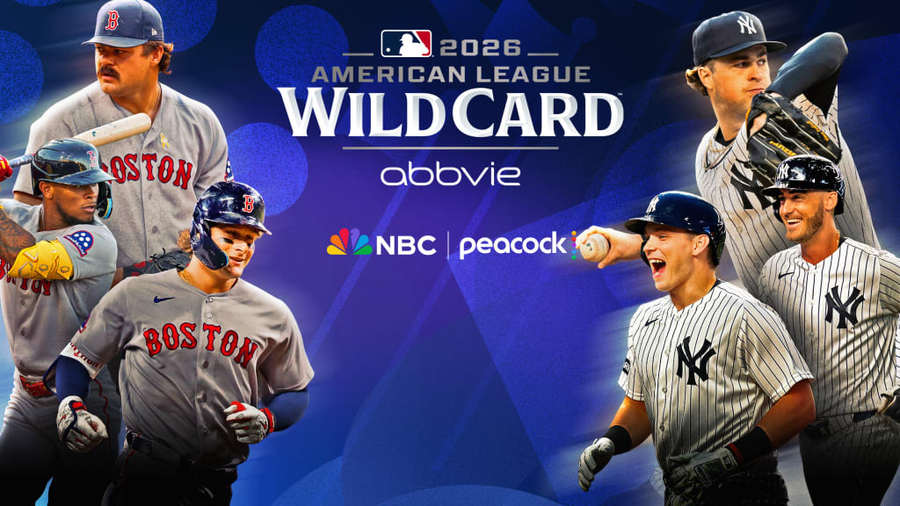
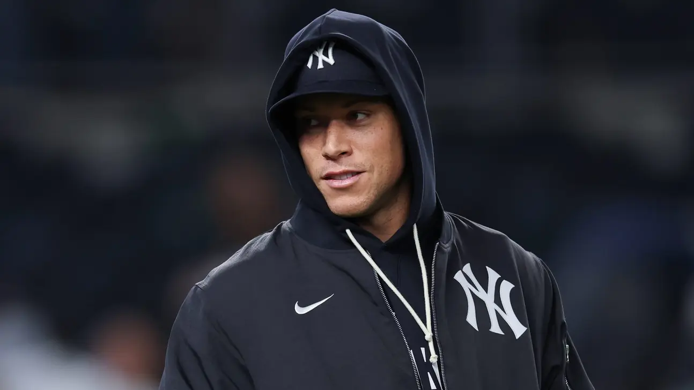
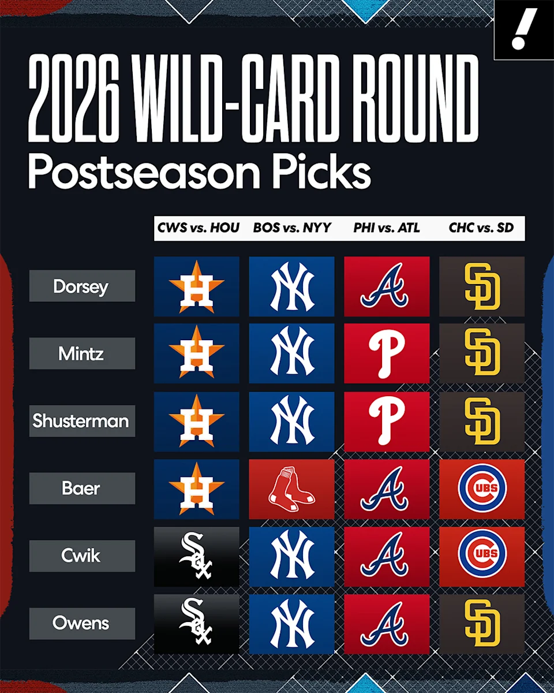
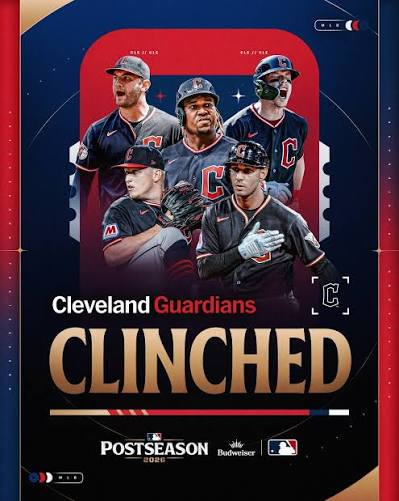

Position-by-Position Analysis: AL Wild Card Series Between Red Sox and Yankees

Specialized analysis article on the postseason classic on "MLB.com".
Baseball's fiercest rivalry returns to the October stage with a toss-up best-of-three series played entirely in the Bronx, where the New York Yankees and Boston Red Sox go head-to-head with a ticket to the American League Division Series on the line.
Breaking down the matchup position by position, evenly distributed strengths are apparent: the Yankees feature the experience of key pieces like Paul Goldschmidt and stability behind the plate, plus the power of a hot Cody Bellinger and Max Fried's hierarchy on the mound; conversely, the Red Sox arrive with heavy bats like Willson Contreras's and interesting bullpen depth that promises to put the Bronx Bombers on the ropes.
Divisional Matchup Details
Historically, these matchups are decided by minimal details, unforced defensive errors, or clutch hits in the eighth inning.
With both teams arriving with very unique momentum after overcoming the obstacles of the regular schedule, the series promises edge-of-your-seat thrills to determine which of the two Eastern giants will survive the autumn.
Source: Specialized analysis article on the postseason classic on "MLB.com".(MLB.com)
Carlos José Villanueva Ramos
📅 29 September 2026
Aaron Judge's Calf Injury Status with the Yankees

Article by Bryan Hoch on the physical status of the Yankees captain on "MLB.com".
The New York Yankees have faced the most tense moment of the year with the health of their superstar and captain, Aaron Judge, who has been racing against the clock to recover from a moderate strain of the right soleus muscle in his calf, an injury that normally requires at least three full weeks of rigorous healing.
Despite the obvious risks and how aggressive the rehabilitation process has been—which included platelet-rich plasma injections and work on an anti-gravity treadmill—the outfielder remains optimistic about his chances of making the roster for the Wild Card Series against the Boston Red Sox.
Boone and the medical staff are evaluating his progress step by step while the slugger insists that, once cleared, his intention is to return directly to patrolling right field and providing the outsized power that characterizes him.
Judge's Medical Outlook
Although Judge missed a good portion of the final stretch of the regular schedule, his presence in the team's dynamic boosts the hopes of the Bronx Bombers.
Management and the coaching staff know that rushing him back too soon carries danger, but the player himself has made it clear that he understands the risks and is willing to take them on to guide his squad on the Bronx diamond.
Source: Article by Bryan Hoch on the physical status of the Yankees captain on "MLB.com".(MLB.com)
Carlos José Villanueva Ramos
📅 29 September 2026
How Every Playoff Team Could Win the World Series
Collective analysis article on title contenders on "MLB.com".
Reaching the postseason is a massive achievement, but lifting the World Series trophy requires a perfect blend of health, timely momentum, and unyielding roster depth.
With the Dodgers chasing a historic three-peat, attention also falls heavily on franchises seeking to break their historic droughts and capture their first-ever absolute championship titles, such as the Milwaukee Brewers, San Diego Padres, and Tampa Bay Rays.
Each of the 12 playoff teams has a viable mathematical and tactical route to October glory.
For teams with first-round byes like the Brewers or Rays, the key is maintaining competitive rhythm without getting cold after the days off, while teams locked in the Wild Card Series depend on their ace starters dominating immediately and their star bats waking up at the peak moment of media pressure.
Championship Keys
The 2026 season has been marked by monstrous individual performances, such as Yordan Alvarez on the offensive side or dominant arms like Cam Schlittler, but in October, individual brilliance fades if the bullpen and defense falter.
The article details that the surprise factor and defensive consistency will dictate baseball's new monarch.
Source: MLB.com Staff (MLB.com)
Carlos José Villanueva Ramos
📅 29 September 2026
MLB 2026 Wild Card Series Predictions

Article by Harry Friedl on the postseason landscape on "MLB.com".
The MLB postseason has officially kicked off, and the matchups promise a completely wild and unpredictable month of October.
Due to the current playoff format and the lack of bracket reseeding, the stage is set for early surprises and teams that could go much further than experts imagined back in March.
Among the boldest predictions heading into the Wild Card Series is the American League matchup where the Houston Astros, armed with their vast October experience, host the Chicago White Sox with a mission to advance to the next round against the Cleveland Guardians.
Meanwhile, in the Senior Circuit, the Philadelphia Phillies visit the Atlanta Braves in an electrifying wild card divisional series where the winner could completely shake up the Los Angeles Dodgers' path in the National League.
Key Analysis Data
The road to the Fall Classic is officially open, and every organization knows that the slightest mistake in these short, best-of-three series can cost them the season.
Experts point out that the experience and momentum of teams like Philadelphia or Houston could tip the scales in series where regular season statistics are completely forgotten.
Source: Harry Friedl (MLB.com)
Carlos José Villanueva Ramos
📅 27 September 2026
Road to Glory: Total Drama on the Final Day of the MLB Season!

Original Writing Credits: Brent Maguire (MLB.com)
The MLB regular season reaches its climax this Sunday, and the excitement is palpable in every corner of the diamond! While we already have ten teams with their tickets straight to the October playoffs, the big question is: who will claim the final spots, and which legends will etch their names in history on this very day?
Hold on to your seats because the finale is going to be a nail-biter!
1. A Do-Or-Death Battle in the AL West!
The game is on in Texas! With the Guardians leading the AL Central and the White Sox securing their Wild Card spot, it all comes down to a dramatic showdown between the Rangers and the Astros.
Both teams come in with an 80-81 record.
Since Houston holds the advantage in head-to-head matchups, the Lone Star team is obligated to win and hope for a slip-up from their neighbors to clinch the title.
Pure fire in the American League!
2. Arizona's miracle against the Phillies' wall
Remember the Phillies' 6.5-game lead on September 1st in the National League Wild Card? Well, it's vanished! The Diamondbacks have staged a picture-perfect comeback since September 18th and now have Philadelphia breathing down their necks, just one game behind.
An Arizona win combined with a Phillies loss would give them the miraculous berth!
3. Battle for the batting title!
Pure history at the plate! The king of multiple teams, Luis Arraez (now with the Phillies), is seeking his fourth batting title with four different franchises.
However, a troublesome ankle sprain sidelined him, forcing him to suffer from the bench.
The provisional batting lead belongs to D-backs catcher Gabriel Moreno (.311), who is looking to emulate legends like Buster Posey and Joe Mauer.
What a feat behind the plate!
4. The strikeout dynasty: Will Misiorowski achieve glory?
Jacob Misiorowski's magical arm has been the talk of the town all year with his 1.86 ERA and 247 strikeouts.
If he keeps Cam Schlittler at bay and crosses the magical 250-strikeout mark this Sunday against the Cardinals, he will join an ultra-exclusive club of pitchers with an ERA under 2 and more than 250 strikeouts, a feat not seen since Jacob deGrom himself in 2018.
A true strikeout machine!
5. Clash of titans for the home run throne!
The formidable Kyle Schwarber (Phillies) is aiming to finally capture the all-Major League home run crown after tying for the lead with 45 blasts! But the task won't be easy, as he shares the top spot with the Cubs' phenom, Pete Crow-Armstrong (PCA).
Let's talk about PCA: the undisputed National League MVP had a phenomenal season with a 40-40 record, a .941 OPS, and a breathtaking 10.7 WAR! If he surpasses Schwarber, he'll break a Cubs home run drought that stretches back to the Sammy Sosa era.
Pure dynamite in the outfield!
6. A legend's final farewell?
And to cap off this emotional rollercoaster, the 42-year-old veteran star Max Scherzer will take the mound this Sunday knowing it could be his final start in the Major Leagues.
The future Hall of Famer will decide his future in the offseason, but in the meantime, he's looking to add to his legendary list of 3,550 strikeouts.